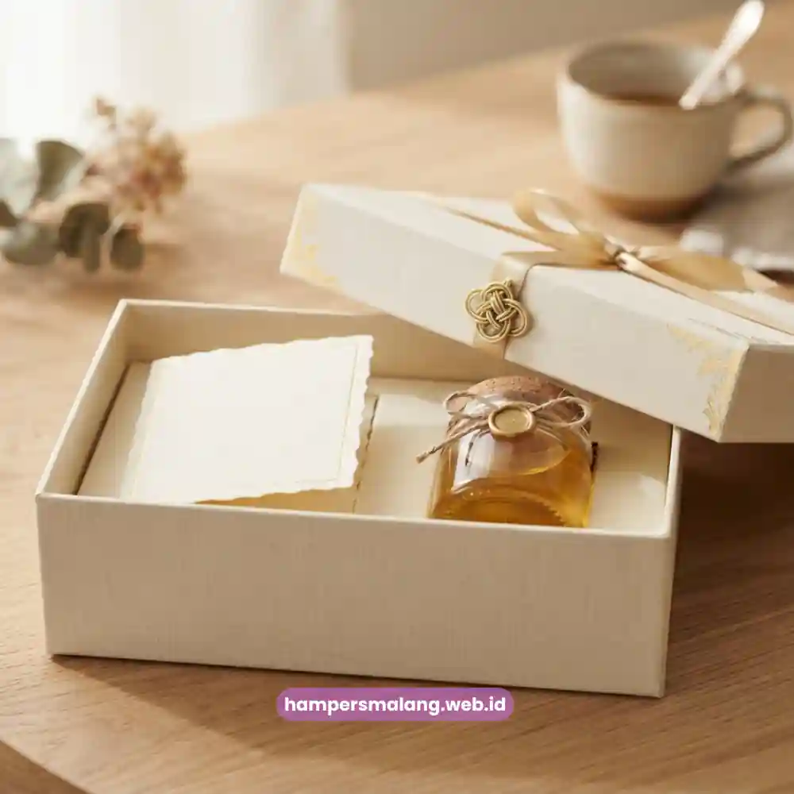

Isi hampers klien yang berkualitas adalah kombinasi produk yang relevan, fungsional, dan mencerminkan standar profesional pengirimnya.
Kualitas isi hampers bukan diukur semata dari harga, melainkan dari ketepatan kurasi antara kebutuhan penerima dan citra yang ingin dibangun perusahaan pengirim.
Artikel ini mengulas bagaimana menyusun komponen hampers agar benar-benar memberi kesan mendalam bagi klien.
Apa yang Membuat Isi Hampers Terasa Berkualitas?
Isi hampers terasa berkualitas ketika setiap produk di dalamnya memiliki keterkaitan tema yang jelas dan terasa telah dipilih dengan cermat, bukan sekadar kumpulan barang acak.
Konsistensi ini menciptakan narasi visual yang membuat penerima merasa hampers tersebut dirancang khusus untuk mereka.
Survei internal terhadap penerima corporate gift pada tahun 2024 menunjukkan bahwa lebih dari 55 persen responden menilai kesan kualitas hampers dari tampilan keseluruhan dan tema, bukan semata dari nilai nominal produk di dalamnya.
Bagaimana Komposisi Ideal Produk dalam Hampers Klien?
Komposisi ideal hampers klien umumnya memadukan produk fungsional yang dapat digunakan sehari-hari dengan produk pengalaman yang memberikan momen menyenangkan, seperti camilan premium atau minuman pilihan.
Perpaduan ini menciptakan keseimbangan antara nilai guna dan nilai kesenangan bagi penerima.
Baca Juga: Paket Seminar Kit Profesional yang Cocok untuk Acara di Semarang
Mengapa Produk Fungsional Tetap Diperlukan?
Produk fungsional seperti alat tulis premium atau perlengkapan kerja bernuansa elegan tetap relevan karena akan terus digunakan klien dalam aktivitas sehari-hari.
Sehingga secara tidak langsung mengingatkan mereka pada perusahaan pengirim setiap kali produk tersebut digunakan.
Bagaimana Produk Pengalaman Memperkuat Kesan Emosional?
Produk pengalaman seperti camilan artisan atau minuman khas menciptakan momen menikmati yang bersifat personal.
Hal ini meninggalkan asosiasi emosional yang lebih kuat dibandingkan produk fungsional semata.
Apakah Isi Hampers Harus Selalu Mahal?
Isi hampers tidak harus selalu mahal untuk terasa berkualitas, karena persepsi nilai lebih banyak dipengaruhi oleh presentasi, kurasi tema, dan kualitas kemasan dibandingkan semata nilai nominal produk.
Hampers dengan anggaran menengah pun dapat terasa premium apabila disusun dengan detail yang cermat.
Yang perlu dihindari adalah kombinasi produk yang terkesan asal-asalan atau tidak memiliki keterkaitan tema.
Karena hal ini justru dapat menurunkan persepsi kualitas meski nilai belanja produknya cukup tinggi.

Bagaimana Peran Kemasan dalam Membentuk Kesan Kualitas?
Kemasan berperan besar dalam membentuk kesan pertama sebelum penerima melihat isi hampers secara langsung.
Material kemasan yang kokoh, warna yang konsisten dengan identitas brand, serta finishing rapi pada pita atau segel menjadi elemen visual yang langsung menciptakan persepsi eksklusivitas.
Detail kecil seperti tekstur kertas pembungkus, jenis pita, hingga cara penataan produk di dalam kotak turut memengaruhi bagaimana penerima menilai keseluruhan kualitas hampers tersebut.
Bahkan sebelum mereka membuka dan mencicipi isinya.
Apa Kesalahan Umum dalam Menentukan Isi Hampers?
Kesalahan umum yang sering terjadi adalah mencampurkan terlalu banyak jenis produk tanpa benang merah yang jelas, sehingga hampers terkesan penuh namun tidak terarah.
Kesalahan lain adalah mengabaikan daya tahan produk, terutama untuk item makanan yang berisiko rusak selama proses pengiriman jarak jauh.
Mengabaikan preferensi umum penerima, seperti pantangan makanan tertentu yang lazim di lingkungan korporat, juga dapat mengurangi kenyamanan penerima saat menerima hampers tersebut.
Kesimpulan
Isi hampers klien yang berkualitas terletak pada keseimbangan antara produk fungsional dan produk pengalaman, konsistensi tema, serta kualitas kemasan yang mencerminkan standar profesional perusahaan pengirim.
Kurasi yang cermat jauh lebih berpengaruh terhadap kesan kualitas dibandingkan sekadar nilai belanja produk.
Untuk memastikan setiap komponen hampers Anda tersusun secara tepat dan mencerminkan citra korporat yang diinginkan, percayakan proses kurasi kepada Hampers Malang.
Mitra yang siap menghadirkan hampers eksklusif dengan standar kualitas konsisten untuk setiap klien Anda.
Pertanyaan yang Sering Diajukan
Isi hampers tidak harus seragam sepenuhnya, karena penyesuaian kecil berdasarkan profil klien justru dapat memperkuat kesan personal tanpa mengorbankan efisiensi produksi dalam jumlah besar.
Menjaga kualitas produk makanan dapat dilakukan dengan memilih produk yang memiliki masa simpan lebih panjang serta kemasan pelindung tambahan untuk pengiriman jarak jauh.
Barang non-makanan memang cenderung lebih aman dari risiko kerusakan selama pengiriman, namun kombinasi dengan produk pengalaman tetap disarankan agar kesan hampers tidak terasa terlalu kaku.

Butuh Hampers Klien Berkualitas?
Dapatkan Penawaran Terbaik untuk Hadiah Klien Anda.
Ditulis oleh Tim Maroon Souvenir
Ahli dalam perancangan corporate gift dan hampers klien premium. Membantu perusahaan membangun relasi terbaik dengan mitra bisnis.